Studio: Items
Guns aren't the only thing lying around a station. There are medkits and ammo packs, armor plates and stims, raw materials for the fleet's refinery, and the fleet's own supplies: fuel, food, water and the rest. Items mode is where all of that lives, along with what each item does when you use it, how the fleet burns through its supplies, and what the refinery and the armory bench make out of the raw stuff.
Why bother with a mode for it? Because items touch everything. A medkit is an item, an effect, an entry in four item tables and part of every player's starting kit. Items mode shows you all of those links, lets you jump between them, and rolls the tables 10,000 times after every change so you can see what a supply pile actually gives.
How to open it
Click Items along the top, or start Studio in it:
dotnet run --project src/LastFleet.Studio -- --mode items --select medkit
Use --select supplies:water to open on an entry whose id is in more than one list (water is both an item and a
supply).
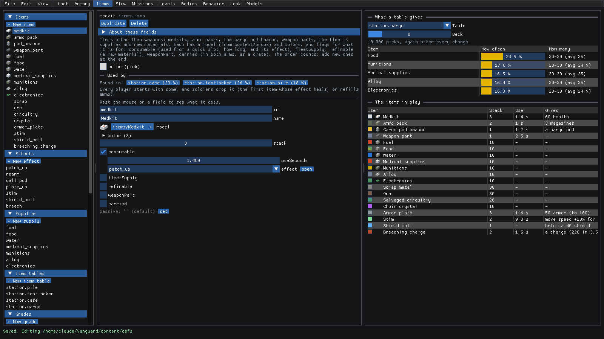
Here's what you're looking at:
- On the left, top to bottom: Items (
items.json), Effects (effects.json), Supplies (supplies.json), Item tables (alsoitems.json), and further down the crafting lists fromcrafting.json: Grades, Refinery tiers, Recipes and Fabrication. - In the middle is the editor. Above an item's fields is Used by: the tables it's found in (and how often), the recipes that refine it, and what the game's own rules do with it. Each one is a button that takes you there.
- On the right, What a table gives rolls a table 10,000 times at the Deck you pick, and again after every change. Under it, The items in play lists every item the way the game has it right now: its stack, how long it takes to use, and what it gives.
New to Studio? getting-started.md covers editing, saving and undoing.
Make a medkit heal more
So the medkit feels weak? An item doesn't heal on its own: it runs an effect. Here's the flow:
Pick medkit under Items. It's
consumable, so it has auseSeconds(1.4) and aneffect(patch_up). Click open next to the effect.That takes you to patch_up under Effects. Its
triggerisuse(it runs when the item is used from a quick slot), and Used by lists the items that run it. Open actions and then heal: one action, healing by anamountof 60.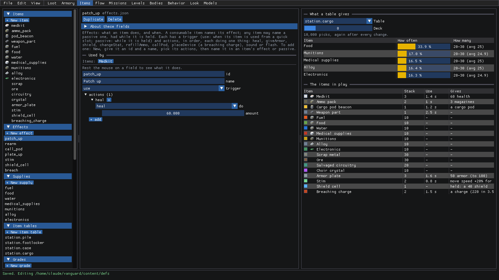
Drag
amountup. The items in play follows along: at about 87, the medkit's Gives column reads 87 health.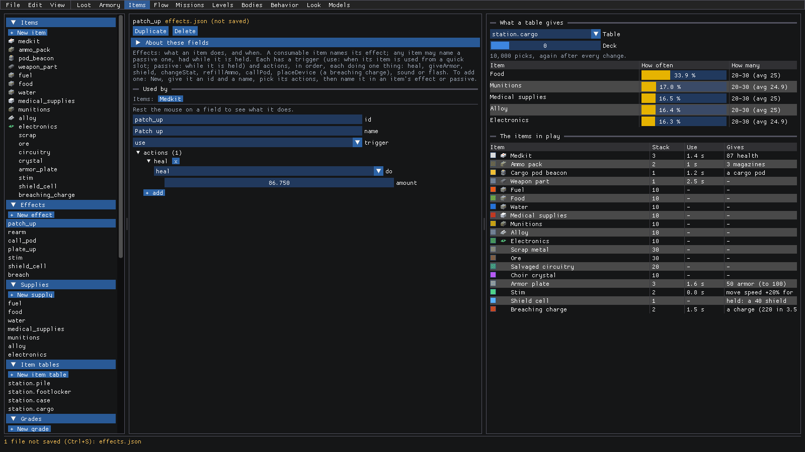
Want it to do something else too? An effect runs its actions in order, so:
Click + add under the actions. A copy of the last one shows up. Open it, then open its
dolist. Every kind of action is here:heal,giveArmor,shield,changeStat,refillAmmo,callPod,placeDevice,soundandflash.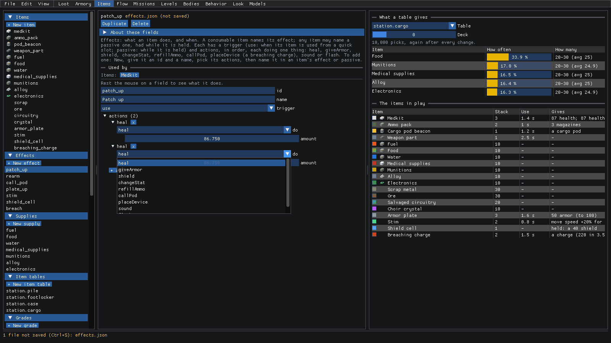
Pick
giveArmor. Its fields swap to the new kind's: anamountand amax. Dragamountdown to something modest. Now the medkit gives 87 health; 13 armor.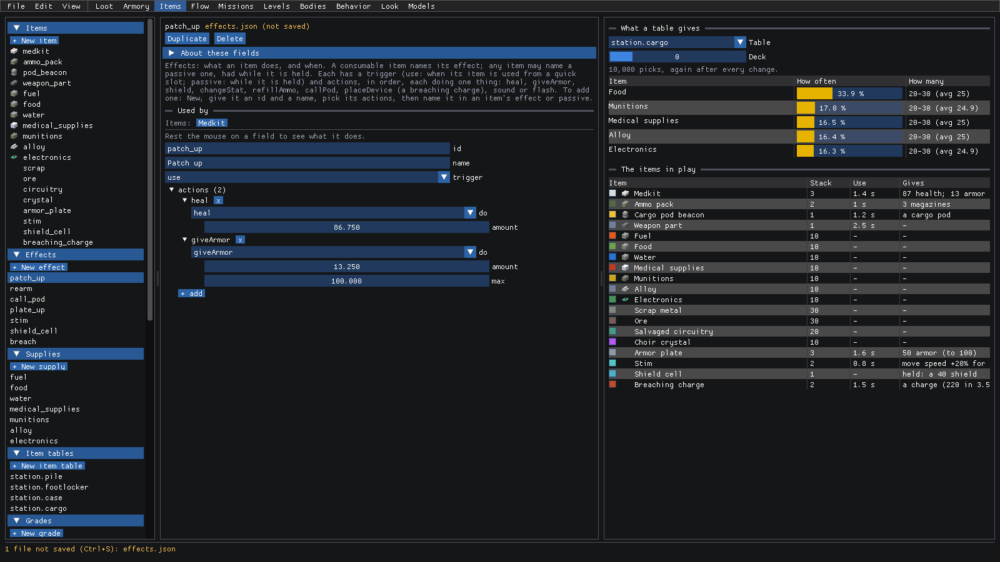
Happy with it? Ctrl+S. Otherwise Ctrl+Z a few times, until the status bar says Saved. again.
An effect only fires an action when it would actually do something (healing only when you're hurt, and so on). A
passive effect (one that works while the item is held, like the shield cell's) can only shield and change stats.
Change what a supply pile holds
Every supply pile, footlocker, case and cargo crate in a level rolls from an item table. A mission names the tables its level uses. Let's look at the pile.
Pick station.pile under Item tables. Its shares are drawn above its fields, and What a table gives on the right switches to it too.
Open entries, then the first one, scrap. Each entry has an
item(with open to jump to it), aweight(how often it's picked against the others), acount([fewest, most]) andperDeck(how many more for each deck deeper in).Drag Deck on the right up to 3. Scrap now comes in stacks of 6 to 9, and the supplies 5 to 7, while medkits stay at 1 or 2. That's
perDeckat work: only entries with one grow as you go deeper.Drag scrap's
weightup from 14 to about 20. Scrap goes from 11.6% of the picks to 16.1%, and everything else gives up a little.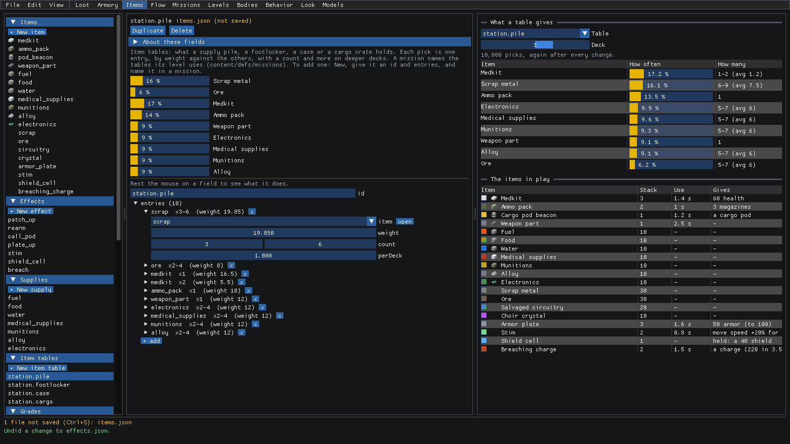
Ctrl+S to keep it, or Ctrl+Z to put it back. A brand new table is + New item table: give it an id and entries, then name it in a mission (see missions.md).
Follow scrap to the refinery
Raw materials like scrap are what the fleet's refinery turns into graded material, and the armory bench turns that into guns. How do you find your way around all that? Follow the links!
Click open next to the scrap entry's
item(or pick scrap under Items). It'srefinable, and its Used by says it's Found in the footlocker (9%) and the pile (11%), and Refined by two recipes:mk1_scrapandmk2_ore, 10 a batch.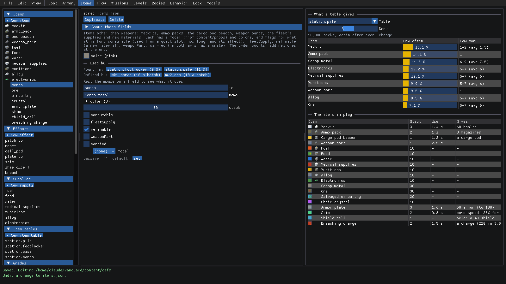
Click mk1_scrap (10 a batch). That's a recipe: a batch takes its
inputs(10 scrap) andgivesso many (1) of agrade(mk1).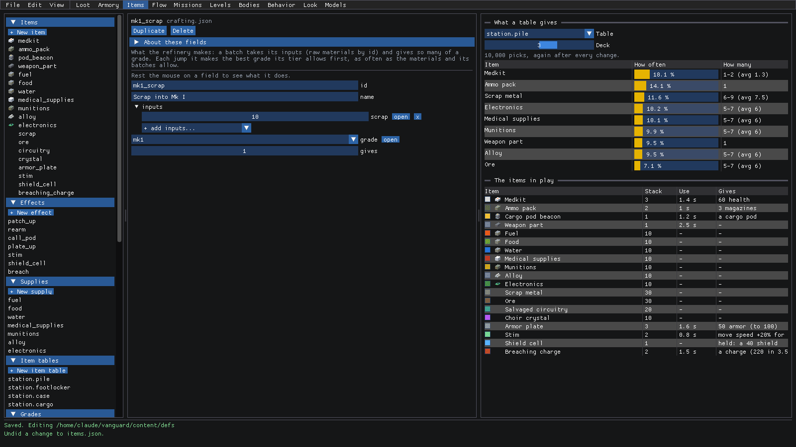
Want the recipe to need circuitry too? Open + add inputs.... It only offers raw materials (the items marked
refinable) that the recipe doesn't already take. Pick circuitry, and it's added at 10.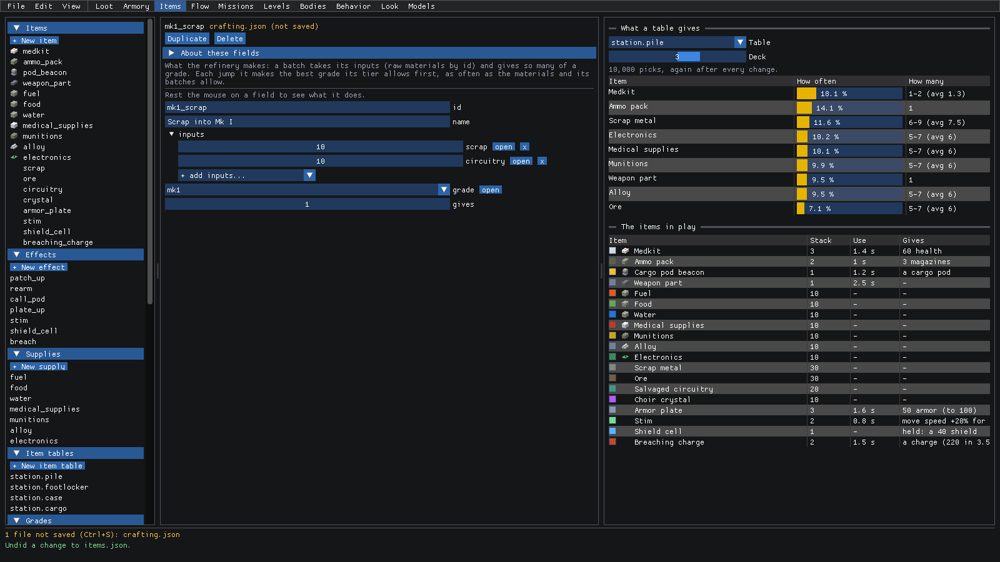
Ctrl+Z that one away (it was just to show you!) and click open next to
grade. Grades go lowest first, and each one'sitemLevelis the item level of whatever's fabricated from it. Mk I makes item level 2.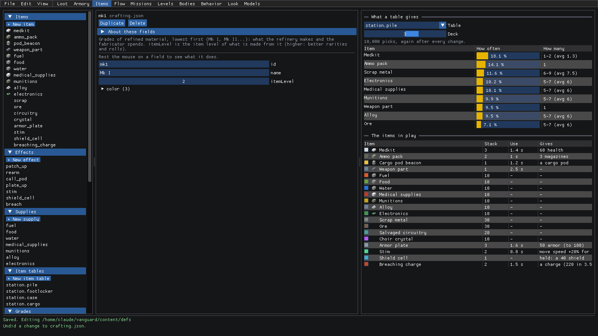
Tune the refinery and the bench
Scroll down the left list to the rest of crafting.json.
Pick plant under Refinery tiers. A fleet starts at the first tier (field) and upgrades at the needs board. Each tier has the
costof the upgrade in the fleet's supplies (30 alloy and 10 electronics here), thegradesit can make (Mk I and Mk II), and how manybatchesit refines a jump.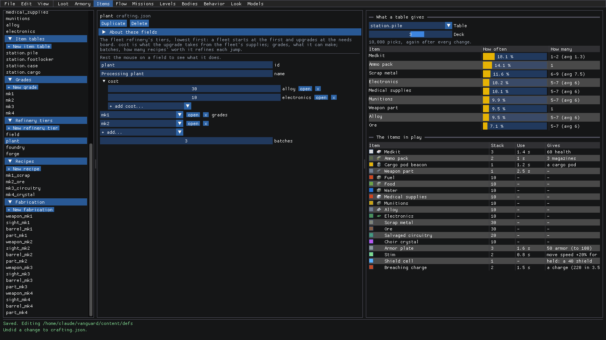
Pick weapon_mk1 under Fabrication. This is what the armory bench on the ship makes: a
weaponrolled from a loottable(loot.station.cache), at its grade's item level, for acostof 3 Mk I. The others, like sight_mk1, make apartof oneslotinstead.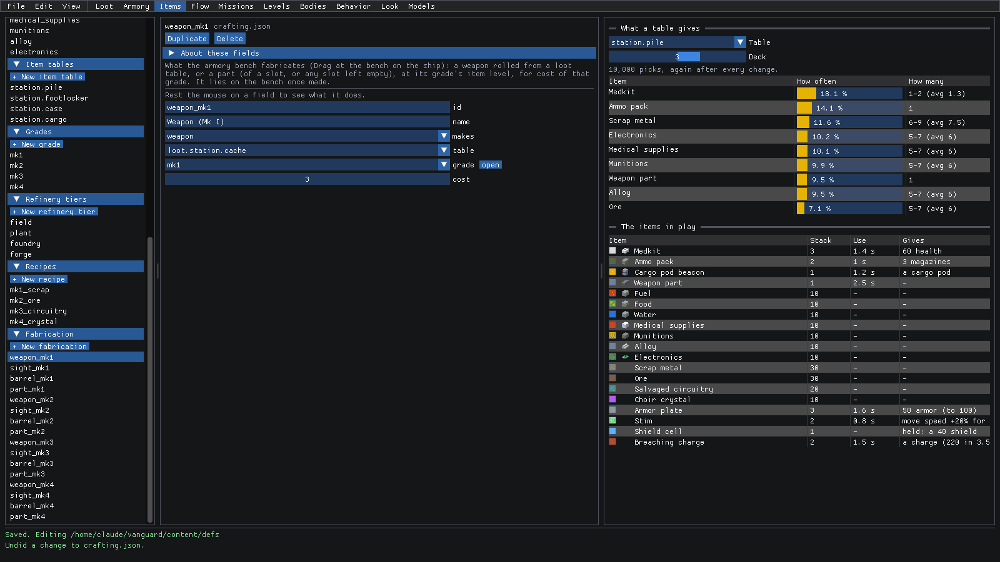
Every number here is a drag away, and Ctrl+S saves crafting.json like any other file. Want to see the whole chain
in one picture, from where things are found to what the bench makes? That's what Flow mode is for (see
flow.md).
Make fuel run out faster
The fleet's supplies get used up every jump. How fast, and what happens when they run short, is in Supplies.
Pick fuel under Supplies. At the top, For a new fleet sums it up: a jump takes 28 fuel (7 ships, 4,000 people), and a new fleet starts with 224. Below that, the stations that mostly hold it.
Open use, then ship. A jump costs fuel in parts that add up, each one
persomething (jump,ship,damagedShip,people,shipAlive,contact) with anamount. Fuel is 4 per ship.Drag
amountup by one, to 5. For a new fleet now says a jump takes 35, and a new fleet starts with 280 (it starts with 8 jumps' worth unlessstartJumpssays otherwise).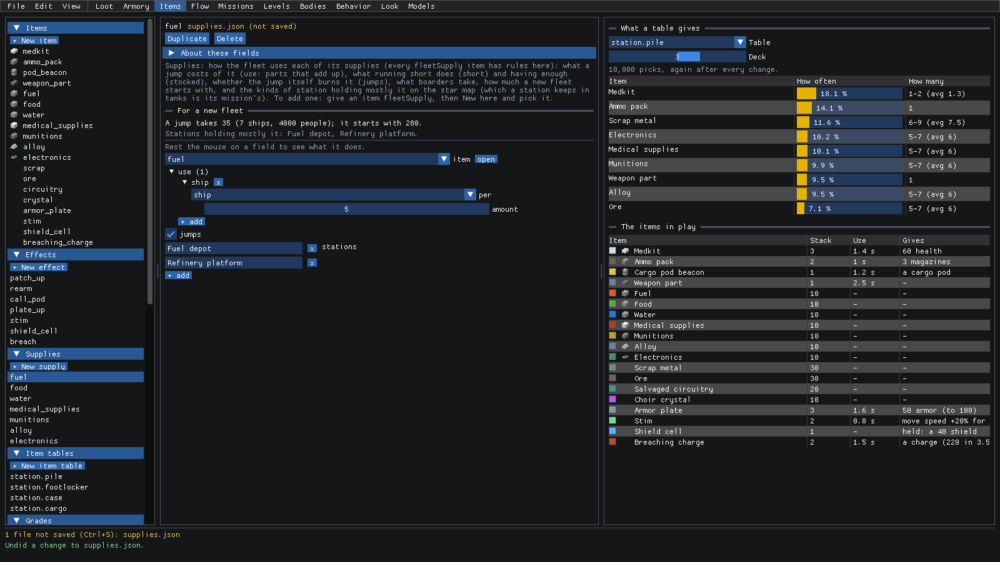
Other supplies have more to them. Food, water and the rest also have short (what happens when you run short:
peopleLost, morale, shipWorn, a message) and stocked (what having enough does: morale, repairShips,
produce). Picking a different kind of row swaps its fields, the same as an effect's actions.
Ctrl+S to keep it, or Ctrl+Z to take it back.
Where to next
- The reference covers every field of Items mode.
- loot.md: the loot tables the armory bench fabricates guns from.
- armory.md: the guns and parts themselves.
- adding-content.md: what to set when you add an item (and why new items go at the end of the list).